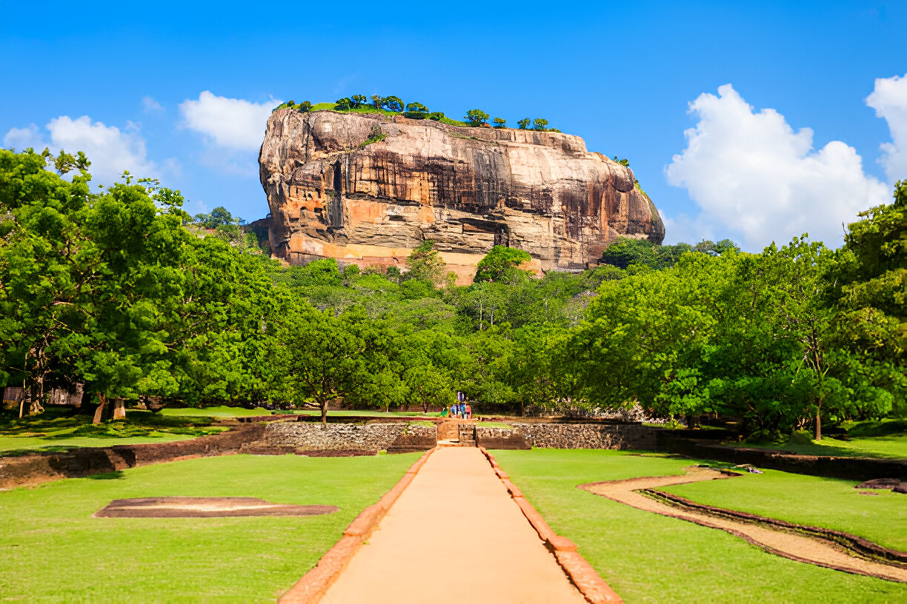
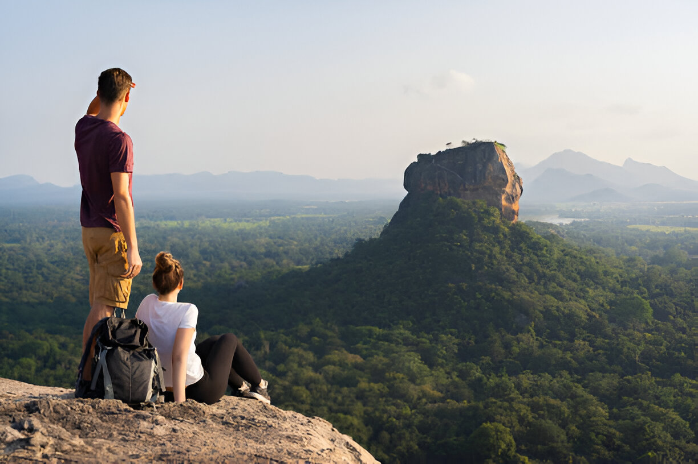
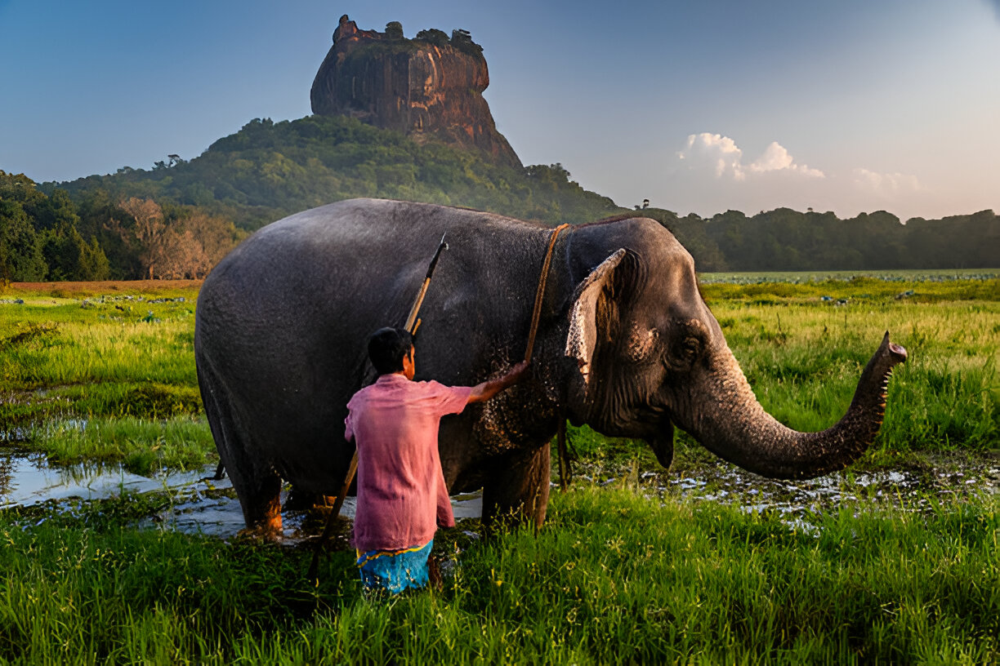
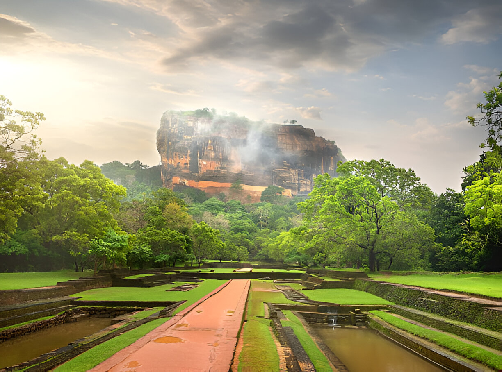
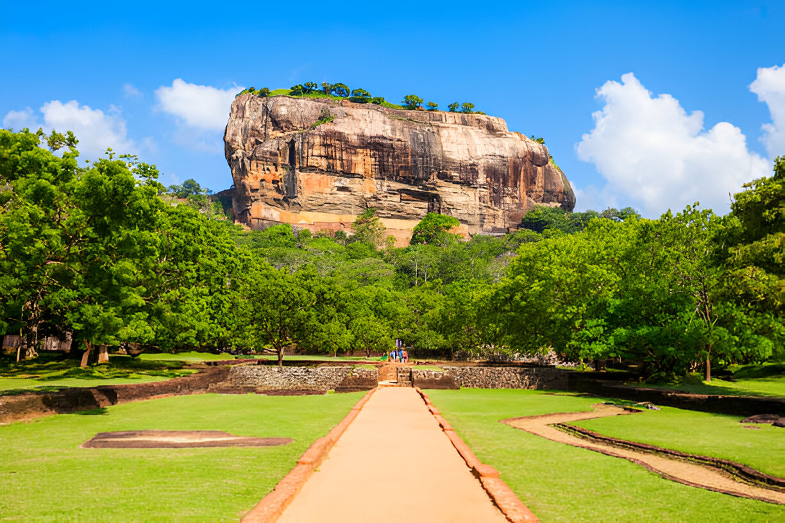
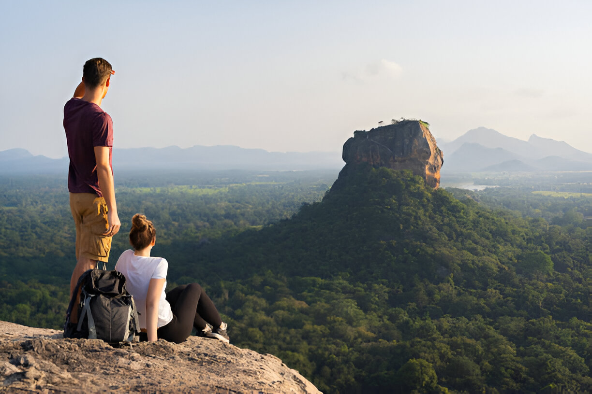
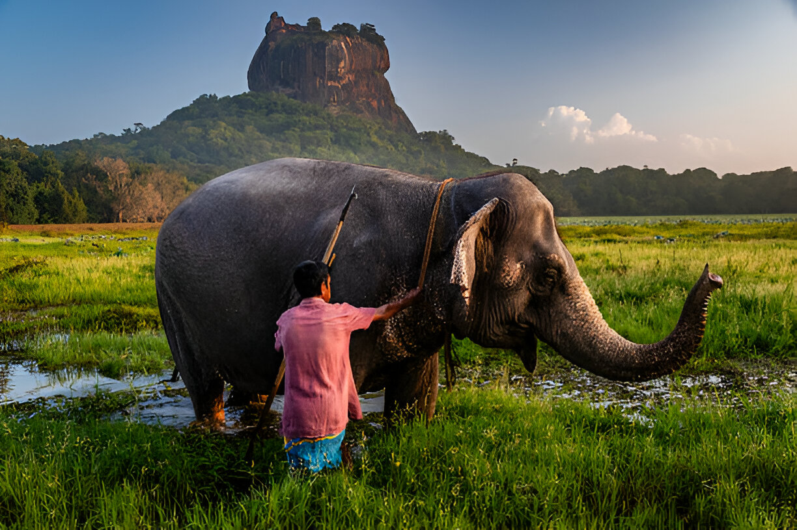
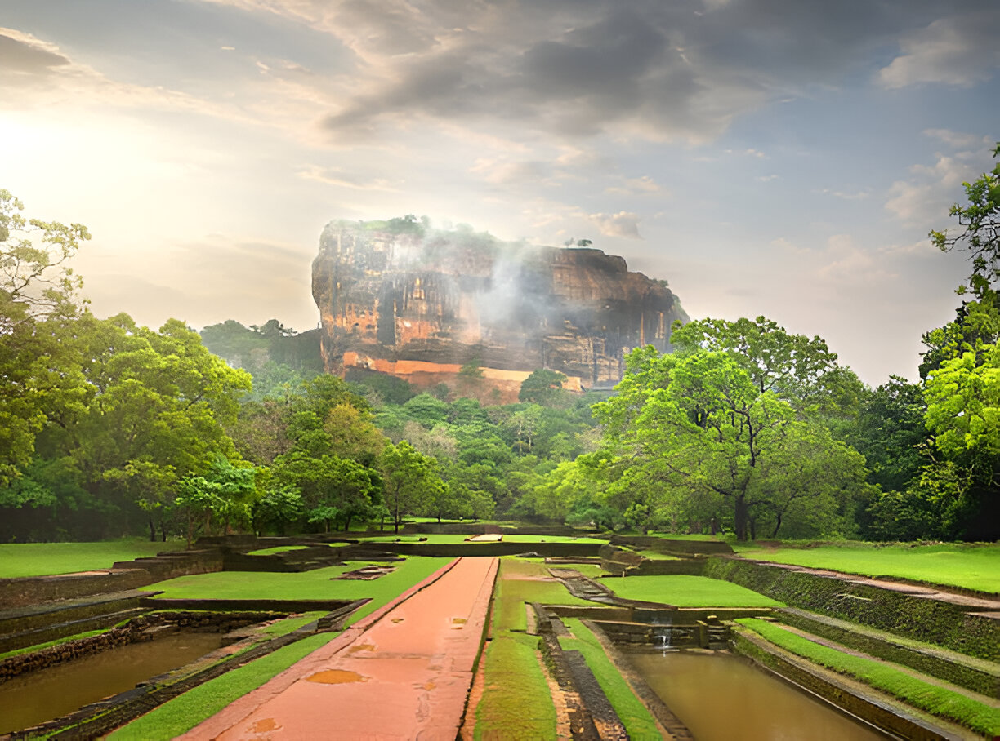

Sigiriya — The Lion Rock
A crown of stone, ancient frescoes, and timeless gardens in the heart of Sri Lanka.
Plan Your VisitAbout Sigiriya
Sigiriya, also known as Lion Rock, is a UNESCO World Heritage site. Built in the 5th century by King Kasyapa, it features a sky palace, vibrant frescoes, the Mirror Wall, and stunning water gardens.
Frescoes
Beautiful paintings of celestial maidens preserved in rock shelters.
Mirror Wall
Once polished like glass, now inscribed with centuries-old visitor poems.
Water Gardens
Ingenious ancient hydraulic systems and symmetrical pools at the base.
Plan Your Visit
Located near Dambulla, Sigiriya rises about 200 meters above the plain. Best visited at sunrise or sunset for breathtaking views.
Gallery
 






